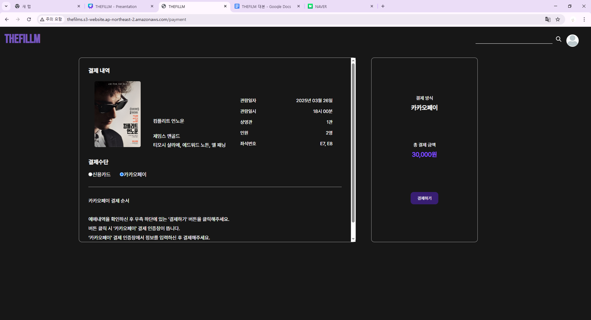
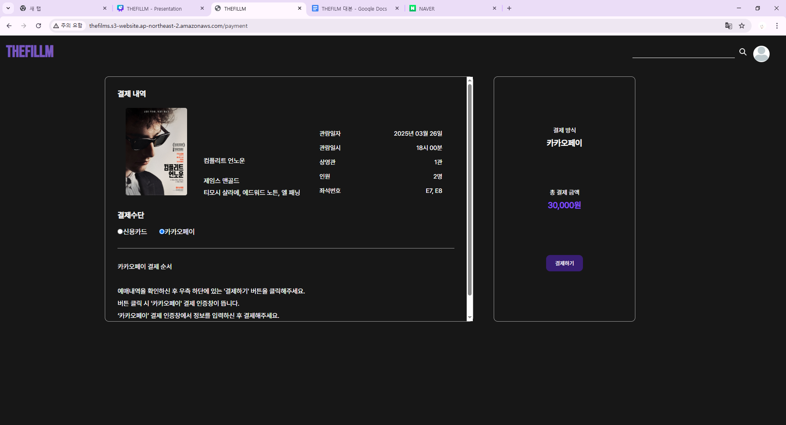
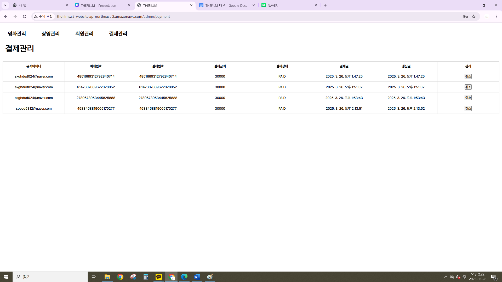
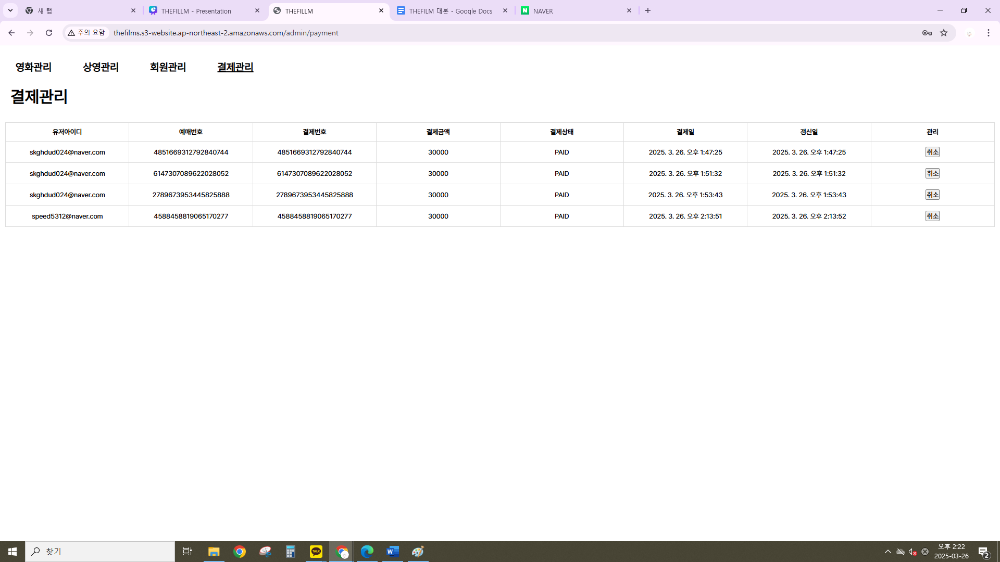

Git & GitHub
효율적인 협업과 코드 관리의 핵심

안녕하세요. 저는 나호영이라고 합니다.
저는 백엔드 개발자로서 제 능력을 키워가고 꿈을 펼치고 싶습니다.
Fintech 서비스를 위한 풀 스택 개발자 양성 과정을 이수하면서 Git, Java, DB 관리, React, Spring 등 다양한 언어를 배웠습니다.
이러한 기술들을 바탕으로 수행한 개인 및 팀 프로젝트는 아래에서 확인하실 수 있습니다.
효율적인 협업과 코드 관리의 핵심
고성능 프로그래밍과 시스템 개발의 핵심
쉬운 문법과 강력한 생산성의 프로그래밍 언어
한 번 작성하면 어디서든 실행되는 강력한 객체지향 언어
데이터의 안정성과 성능을 동시에 잡는 기업용 데이터베이스
웹의 골격을 만들고, 스타일을 입히고, 생명을 불어넣다
비동기 이벤트 기반으로 빠르고 확장 가능한 서버를 구축하다
컴포넌트 기반으로 효율적인 UI를 설계하는 프론트엔드 라이브러리
안정성과 확장성을 갖춘 강력한 백엔드 프레임워크
클라우드 환경에서 확장성과 유연성을 극대화하다


 


 
